SUSPENSION CONTROL CYLINDER > INSTALLATION |
| 1. INSTALL CENTER SUSPENSION CONTROL CYLINDER SUB-ASSEMBLY |
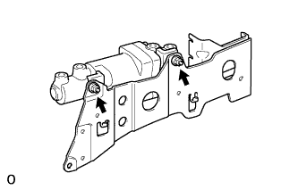 |
Install the cylinder to the bracket with the 2 nuts.
| 2. INSTALL HEIGHT CONTROL BRACKET WITH CYLINDER ASSEMBLY |
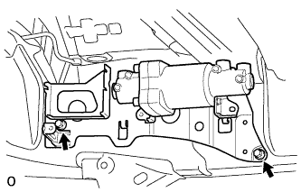 |
Install the bracket with cylinder with the 2 bolts.
| 3. CONNECT NO. 3 HEIGHT CONTROL TUBE LH |
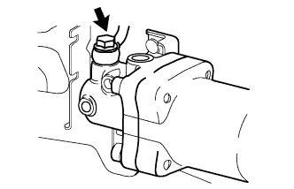 |
Install a new gasket to the No. 3 height control tube, and then connect the height control tube to the control cylinder with the union bolt.
| 4. CONNECT NO. 4 HEIGHT CONTROL TUBE |
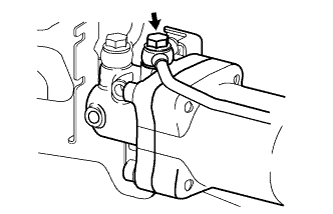 |
Install a new gasket to the No. 4 height control tube, and then connect the height control tube to the control cylinder with the union bolt.
| 5. CONNECT NO. 4 HEIGHT CONTROL TUBE LH |
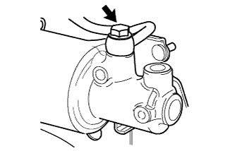 |
Install a new gasket to the No. 4 height control tube, and then connect the height control tube to the control cylinder with the union bolt.
| 6. CONNECT NO. 3 HEIGHT CONTROL TUBE |
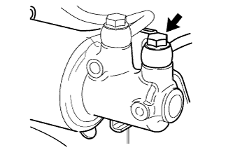 |
Install a new gasket to the No. 3 height control tube, and then connect the height control tube to the control cylinder with the union bolt.
| 7. INSTALL NO. 1 HEIGHT CONTROL VALVE ASSEMBLY |
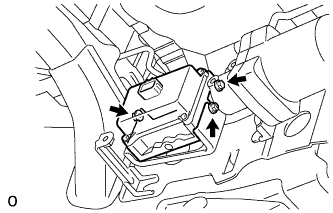 |
Install the 3 bolt cushions and 3 bolt holders to the control valve.
Install the control valve with the 3 nuts.
| 8. CONNECT REAR NO. 4 HEIGHT CONTROL TUBE |
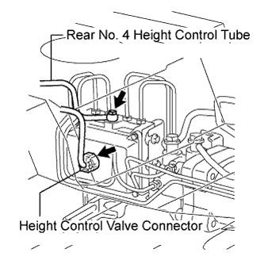 |
Install a new gasket to the control tube, and connect the control tube with the union bolt.
Connect the height control valve connector.
| 9. INSTALL NO. 5 HEIGHT CONTROL TUBE |
Using a union nut wrench, install the No. 5 control tube to the control valve and center cylinder.
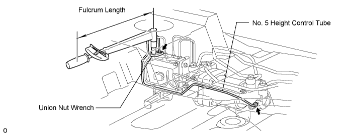
| 10. INSTALL NO. 5 HEIGHT CONTROL TUBE LH |
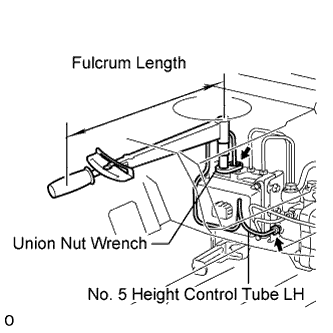 |
Using a union nut wrench, install the No. 5 control tube to the control valve and center cylinder.
| 11. INSTALL NO. 6 HEIGHT CONTROL TUBE LH |
Using a union nut wrench, install the No. 6 control tube to the control valve and center cylinder.
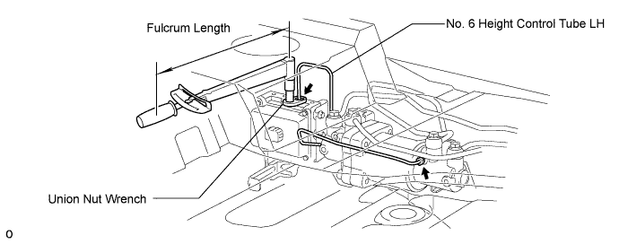
| 12. INSTALL NO. 6 HEIGHT CONTROL TUBE |
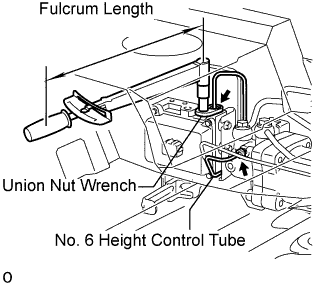 |
Using a union nut wrench, install the No. 6 control tube to the control valve and center cylinder.
| 13. INSTALL CLAMP |
Install the clamp to the 3 height control tube.
| 14. INSTALL SUSPENSION CONTROL PUMP ACCUMULATOR ASSEMBLY |
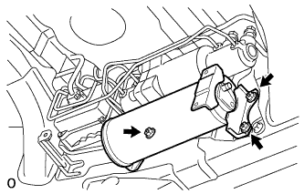 |
Install the accumulator with the 3 nuts.
| 15. INSTALL NO. 7 HEIGHT CONTROL TUBE |
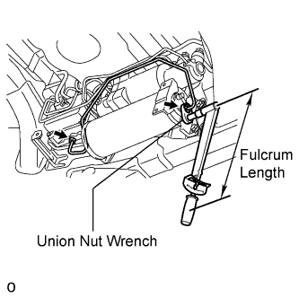 |
Using a union nut wrench, install the No. 7 control tube to the control valve and accumulator.
| 16. BLEED AIR FROM SUSPENSION FLUID |
 |
With the engine stopped, fill the reservoir tank with fluid.
With the vehicle on a level surface, start the engine and set the vehicle height to NORMAL with the suspension control switch.
When the vehicle height becomes NORMAL and the pump stops, stop the engine.
 |
Connect a hose to the bleeder plug of the front left side or right side control valve, then loosen the bleeder plug.
After the fluid containing air stops coming out, retighten the bleeder plug.
 |
Connect a hose to the bleeder plug of the rear left side or right side control valve, then loosen the bleeder plug.
After the fluid containing air stops coming out, retighten the bleeder plug.
Repeat the previous 4 procedures until the fluid containing air stop coming out.
| 17. CHECK FLUID LEVEL IN RESERVOIR |
 |
With the vehicle empty, after setting the vehicle height to NORMAL from LO, check the indicator to make sure the vehicle height is NORMAL and check that the fluid level in the reservoir tank is within the specified range (MAX, MIN).
| 18. INSPECT FOR SUSPENSION FLUID LEAK |
Check that the union nuts shown in the illustration are tightened to the specified torque.
Check for fluid leakage from the parts and connections.

| 19. INSTALL HEIGHT CONTROL UNIT INSULATOR |
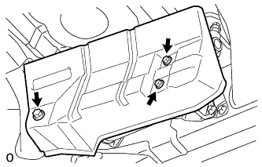 |
Install the insulator to the height control unit with the 3 bolts.
| 20. INSTALL CENTER EXHAUST PIPE ASSEMBLY |
for 2UZ-FE:
Install the center exhaust pipe (Click here).
for 1VD-FTV:
Install the center exhaust pipe (Click here).
| 21. INSTALL TAILPIPE ASSEMBLY |
for 2UZ-FE:
Install the tailpipe (Click here).
for 1VD-FTV:
Install the tailpipe (Click here).
| 22. INSPECT FOR EXHAUST GAS LEAK |